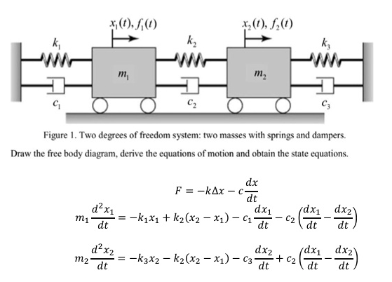
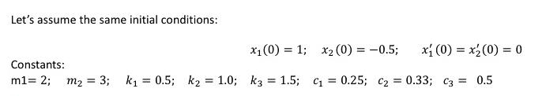

線上繪圖 <<
Previous Next >> Network
w15-w16
w15_1a_1.mp4 (說明課程總結, 並且更新可以開發 C 靜態與動態繪圖的程式環境)
w15_1a_2.mp4 (在 Replit, s.cycu.org 與 localhost 中保持與 github 倉儲同步)
課堂考試題目:
1) 根據 roc_list_coord_flag.7z 程式內容所印出的六組 ABED 等繪製 ROC 國旗白日圖案中的菱形四個關鍵點, 請直接在青天與滿地紅的圖案中, 利用白色作為畫線顏色, 將第二組的 ABED 等四個點的座標, 以直線相連.
2) 承上題, 請列出第二組 ABED 的四條直線與白日中的大圓所相交 (intersect) 的四個點座標.
請在個人的 w15 頁面中完成上列兩個題目的操作後, 製作一個 Wink 影片說明操作過程與結果, 完成後請將個人網頁連結提供本對談的回應中(即回應到 CP2023 的團隊貼文下方).
參考資料:
平面上圓與直線的交點: https://mathworld.wolfram.com/Circle-LineIntersection.html
程式: https://rosettacode.org/wiki/Line_circle_intersection#C
w16 Final Project (圖片來源):


1. 請利用 C + gd 繪圖程式庫重新繪製 Figure 1 的質量、彈簧與阻尼器與左右牆面的配置圖.
2. 當 m1 的起始位置為 1, m2 的起始位置為 -0.5 且 m1, m2 的起始速度都為 0 的情況下, 請利用 C + gnuplot 繪製從 t=0 到 t=10 秒之間, m1 與 m2 的位置以及速度相對於時間的趨勢圖.
參考資料:
https://pressbooks.bccampus.ca/engineeringsystems/chapter/building-bond-graph-models-general-procedure-and-application/
Poisson3D.7z from https://github.com/derekharrison/Poisson3D
https://github.com/derekharrison/heat3D-flex
https://github.com/anuj-das-10/Numerical-Methods
https://github.com/mikeroyal/Differential-Equations-Guide
https://github.com/LinjianMa/Numerical-Fluid-Dynamics
https://github.com/SciML/diffeqpy
https://github.com/cfgnunes/numerical-methods-python
https://github.com/Nesador95/Computational-Physics-Solutions
tcc with gd, raylib and sdl2.7z (需要下載密碼)
解開壓縮後取代原有 tinyc 可攜環境中的 tcc 目錄, 並將 cpp.properties 檔案取代原有 wscite 目錄中的檔案後, 即可直接利用 wscite 編輯器中的 Tools - Go 利用 Tiny C Compiler 執行 C + gd, C + raylib, C + gnuplot 與 C + SDL2 等位於 tcc\c_ex 目錄中的靜態與動態繪圖範例程式.
https://libgd.github.io/manuals/2.2.3/
https://www.raylib.com/
https://github.com/libsdl-org/SDL
https://github.com/simple2d/simple2d
https://github.com/ryanpcmcquen/basque
https://github.com/actsl/kiss_sdl
https://github.com/johnpayne-dev/MinecraftC
https://github.com/mdecycu/F1-Race
https://github.com/mdecycu/Run-Away (下載 tcc 編譯連結後的可執行檔案, 需要下載密碼)
https://github.com/rapiz1/DungeonRush
https://github.com/pygame/pygame
https://github.com/pygame-community/pygame-ce
https://github.com/cxong/cdogs-sdl
https://github.com/fabiangreffrath/crispy-doom
https://github.com/agavrel/42_CheatSheet
https://www.cs.colby.edu/maxwell/courses/tutorials/maketutor/
https://lazyfoo.net/tutorials/SDL/
https://hackmd.io/@seanyih/SDL2-tutorial/
C 程式的 gd 與 gnupot 繪圖 -> Brython Frontend + Python Backend (cmsimde)
cmsimde linked with Solid Edge Community edition
Arduino Programming in C
C 程式的動態繪圖 (Game or Simulation):
C + SDL 2D Game: 登入 Replit 後, 點擊 Basque, 將原始碼匯入 Repl 後, 按下 Run 執行
https://github.com/mdecycu/tinyc.games
C 程式版次管理與資料庫系統:
https://www.fossil-scm.org
https://www.sqlite.org
Python 的動態繪圖 (PyQt and Pysdl2):
https://pyslvs.github.io
https://github.com/py-sdl/py-sdl2
然後呢?
C/C++ and/or Qt:
https://github.com/OpenModelica/OpenModelica
https://github.com/modelica/VehicleInterfaces
https://people.inf.ethz.ch/fcellier/Pubs/BG/
https://github.com/CoppeliaRobotics
https://github.com/cyberbotics/webots
https://github.com/Range-Software/range3
https://github.com/bulletphysics/bullet3
Rust:
https://github.com/KmolYuan/efd-rs
https://github.com/KmolYuan/four-bar-rs
Typescript:
https://github.com/PMKS-Web/PMKSWeb
Mojo:
https://github.com/modularml/mojo
線上繪圖 <<
Previous Next >> Network